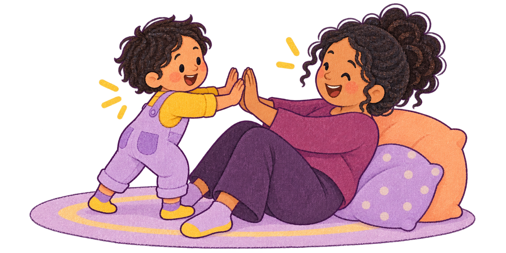

Online-Elternkurs · ab Oktober
Kleiner Schritt.
Großes Gefühl.
Wut, Angst und Traurigkeit begleiten.
Mit Nähe zum Kind und Unterstützung für dich.

Hand in Hand Parenting · Starter Class
Start: 17. Oktober 2026
6 Samstage · 9–11 Uhr · online
4–7 Eltern in einer kleinen Gruppe
Inklusive 60 Min. Einzelcoaching

Mit Julia Sutter
Zertifizierte Hand in Hand Instructorin